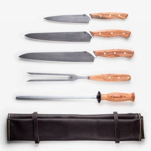

Yesterday I went to the store and got a premium German-made chef's knife! (What better way to say I love myself than to invest in quality cutlery?) The precision and craftsmanship of German knives are unmatched. Should I grab a whetstone to keep it sharp, or maybe a magnetic knife holder? What are you thinking!? Bruh hey Bruh, are you going to help me decide or what!?